Arena区域：类似于区域，他是对应多个线程的，默认开始是一个线程对应一个区域，这样多线程竞争就会少很多，除非一个CPU上的两个线程很不巧数据都在同一个缓存行里面就可能会有竞争。
Chunk块：这个默认是一般的16M大小的内存区域，比如堆内内存的话内部其实就是16M的字节数组，其实他也由很多页组成的。
Page页：默认8K大小，是内存分区最基本的单位，其实Chunk块就是页的组合，后面的Tiny/Small是对页内部再继续分区。
内存规格分类：
Tiny：大小不定，从16B开始，按16B递增，一直到496B，比如16，32，48，64，...，480,496。总共31种。
Small：大小不定，从512B开始，按两倍递增，一直到4KB，比如512,1k，2k，4k。总共4种。
Normal：也可以叫做Run，大小不定，从8k开始到16m。
Huge：大于16m的。
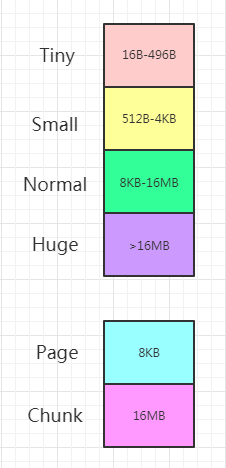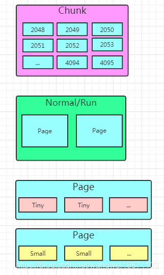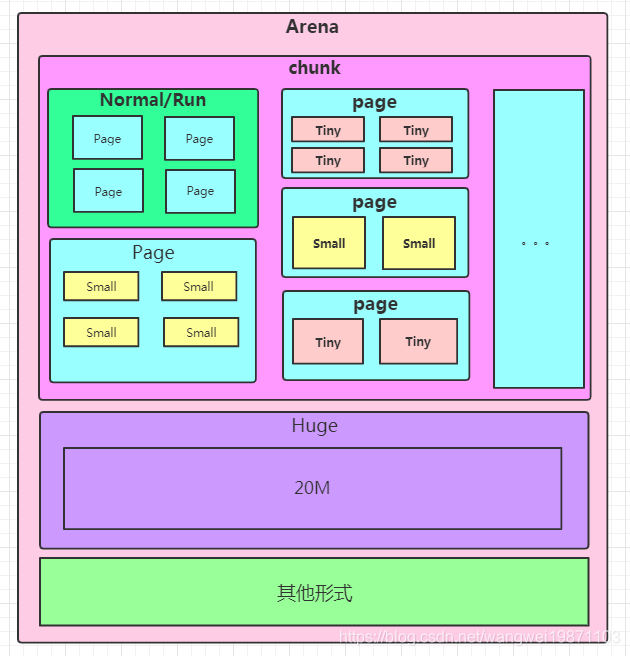
netty的内存管理方案类似jemalloc，因此相对来说比较复杂，他把内存进行了分割，很多依据都是来自这个分配器里的，所以得先把这个了解下，不然后面你可能会问，为什么chunk是16m，为什么pageSize是8k，因为都定义在他里面。首先我要说的下大致的内存分配结构。
先看一些主要的静态变量，这些都会在静态代码块中初始化
x1// 堆缓冲区区域的数量 默认162private static final int DEFAULT_NUM_HEAP_ARENA;3// 直接缓冲区区域的数量 默认164private static final int DEFAULT_NUM_DIRECT_ARENA;5
6// 页大小 默认81927private static final int DEFAULT_PAGE_SIZE;8// 满二叉树的最大深度 默认119private static final int DEFAULT_MAX_ORDER;10
11
12// 直接内存对齐 默认013private static final int DEFAULT_DIRECT_MEMORY_CACHE_ALIGNMENT;14// 每个块中最大字节缓冲区的数量 和ArrayDeque有关 默认102315static final int DEFAULT_MAX_CACHED_BYTEBUFFERS_PER_CHUNK;16
17// TINY缓存数量 默认51218private static final int DEFAULT_TINY_CACHE_SIZE;19// SMALL缓存数量 默认25620private static final int DEFAULT_SMALL_CACHE_SIZE;21// NORMAL缓存数量 默认6422private static final int DEFAULT_NORMAL_CACHE_SIZE;DEFAULT_PAGE_SIZE(io.netty.allocator.pageSize)：内存管理是把内存分成一个个页的，然后再对页进行分割和组合，默认页大小8k。
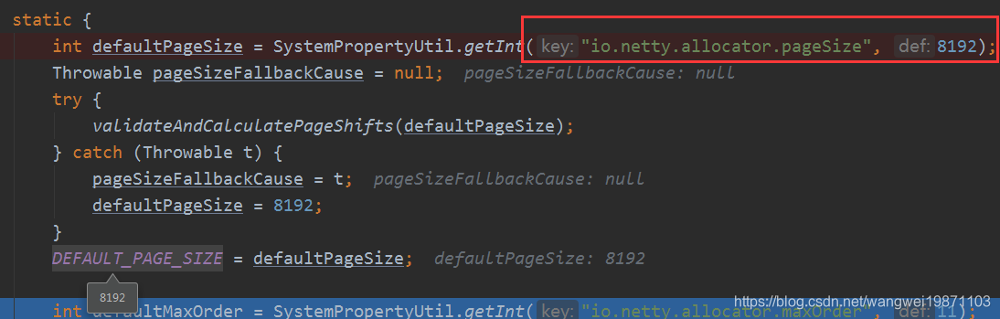
DEFAULT_MAX_ORDER(io.netty.allocator.maxOrder)：这个是为了将chunk进行页大小的分割而使用的一棵满二叉树的最大深度，默认是11，也就是4095个结点，最深的一层是2048个节点，每个节点对应一个页大小，也即最深一层的容量就是一个chunk大小，8k x 2048=16m。
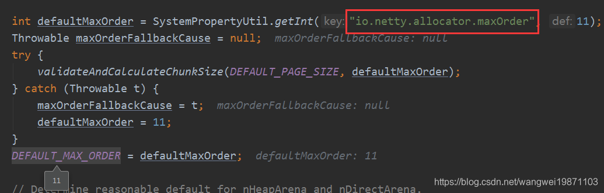
DEFAULT_NUM_HEAP_ARENA和DEFAULT_NUM_DIRECT_ARENA：首先是先计算出了chunk的大小final int defaultChunkSize = DEFAULT_PAGE_SIZE << DEFAULT_MAX_ORDER（`8k<<11=16M）。
然后计算堆缓冲区和直接缓冲区分配的区域Arena的数量，一般是CPU个数的2倍。这里有段runtime.maxMemory() / defaultChunkSize / 2 / 3的意思就是说，获取可用的最大内存，然后除以chunk的个数，除以2(因为每个区域个数不能超过50%呀)，而且得有3个chunk，所以又除以3。当然这个值算出来貌似可以大于16m，但是太大了内部碎片多，分配灵活性也不好。当然这里还有两个参数可以调io.netty.allocator.numHeapArenas，io.netty.allocator.numDirectArenas。
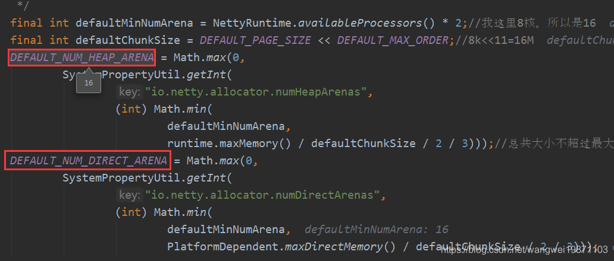
如何使用？
11ByteBuf byteBuf = ByteBufAllocator.DEFAULT.heapBuffer(5); 调用了ByteBufUtil的默认分配器。
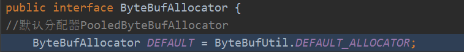
静态代码执行的时候会发现默认是池化的，然后调用的是PooledByteBufAllocator.DEFAULT：
291static {2 String allocType = SystemPropertyUtil.get(3 "io.netty.allocator.type", PlatformDependent.isAndroid() ? "unpooled" : "pooled");4 allocType = allocType.toLowerCase(Locale.US).trim();5
6 ByteBufAllocator alloc;7 if ("unpooled".equals(allocType)) {8 alloc = UnpooledByteBufAllocator.DEFAULT;9 logger.debug("-Dio.netty.allocator.type: {}", allocType);10 11 // 服务器默认用这个12 } else if ("pooled".equals(allocType)) {13 // ---往下看---14 alloc = PooledByteBufAllocator.DEFAULT;15 // ---end---16 logger.debug("-Dio.netty.allocator.type: {}", allocType);17 } else {18 alloc = PooledByteBufAllocator.DEFAULT;19 logger.debug("-Dio.netty.allocator.type: pooled (unknown: {})", allocType);20 }21
22 DEFAULT_ALLOCATOR = alloc;23
24 THREAD_LOCAL_BUFFER_SIZE = SystemPropertyUtil.getInt("io.netty.threadLocalDirectBufferSize", 0);25 logger.debug("-Dio.netty.threadLocalDirectBufferSize: {}", THREAD_LOCAL_BUFFER_SIZE);26
27 MAX_CHAR_BUFFER_SIZE = SystemPropertyUtil.getInt("io.netty.maxThreadLocalCharBufferSize", 16 * 1024);28 logger.debug("-Dio.netty.maxThreadLocalCharBufferSize: {}", MAX_CHAR_BUFFER_SIZE);29}21public static final PooledByteBufAllocator DEFAULT =2 new PooledByteBufAllocator(PlatformDependent.directBufferPreferred());默认是偏好直接内存的：
41// true2public PooledByteBufAllocator(boolean preferDirect) {3 this(preferDirect, DEFAULT_NUM_HEAP_ARENA, DEFAULT_NUM_DIRECT_ARENA, DEFAULT_PAGE_SIZE, DEFAULT_MAX_ORDER);4} 最后就调用到这里，就是做了一些参数的设置，还有就是Arena区域的创建和一些指标的创建。
661public PooledByteBufAllocator(boolean preferDirect, int nHeapArena, int nDirectArena, int pageSize, int maxOrder,2 int tinyCacheSize, int smallCacheSize, int normalCacheSize,3 boolean useCacheForAllThreads, int directMemoryCacheAlignment) {4 super(preferDirect);5 // 使用线程缓存6 threadCache = new PoolThreadLocalCache(useCacheForAllThreads);7 // TINY缓存数量 默认5128 this.tinyCacheSize = tinyCacheSize;9 // SMALL缓存数量 默认25610 this.smallCacheSize = smallCacheSize;11 // NORMAL缓存数量 默认6412 this.normalCacheSize = normalCacheSize;13 // 计算块大小。默认16m14 chunkSize = validateAndCalculateChunkSize(pageSize, maxOrder);15
16 checkPositiveOrZero(nHeapArena, "nHeapArena");17 checkPositiveOrZero(nDirectArena, "nDirectArena");18
19 checkPositiveOrZero(directMemoryCacheAlignment, "directMemoryCacheAlignment");20 if (directMemoryCacheAlignment > 0 && !isDirectMemoryCacheAlignmentSupported()) {21 throw new IllegalArgumentException("directMemoryCacheAlignment is not supported");22 }23 // 检查只能是2的倍数24 if ((directMemoryCacheAlignment & -directMemoryCacheAlignment) != directMemoryCacheAlignment) {25 throw new IllegalArgumentException("directMemoryCacheAlignment: "26 + directMemoryCacheAlignment + " (expected: power of two)");27 }28 // ---看1.4.1步---29 // page大小是1<<pageShift得到 默认1330 int pageShifts = validateAndCalculatePageShifts(pageSize);31 // ---end---32 33 // 堆区域初始化34 if (nHeapArena > 0) {35 heapArenas = newArenaArray(nHeapArena);36 List<PoolArenaMetric> metrics = new ArrayList<PoolArenaMetric>(heapArenas.length);37 for (int i = 0; i < heapArenas.length; i ++) {38 // 创建 PoolArena 在第三步39 PoolArena.HeapArena arena = new PoolArena.HeapArena(this,40 pageSize, maxOrder, pageShifts, chunkSize,41 directMemoryCacheAlignment);42 heapArenas[i] = arena;43 metrics.add(arena);44 }45 heapArenaMetrics = Collections.unmodifiableList(metrics);46 } else {47 heapArenas = null;48 heapArenaMetrics = Collections.emptyList();49 }50 // 直接缓冲区区域初始化51 if (nDirectArena > 0) {52 directArenas = newArenaArray(nDirectArena);53 List<PoolArenaMetric> metrics = new ArrayList<PoolArenaMetric>(directArenas.length);54 for (int i = 0; i < directArenas.length; i ++) {55 PoolArena.DirectArena arena = new PoolArena.DirectArena(56 this, pageSize, maxOrder, pageShifts, chunkSize, directMemoryCacheAlignment);57 directArenas[i] = arena;58 metrics.add(arena);59 }60 directArenaMetrics = Collections.unmodifiableList(metrics);61 } else {62 directArenas = null;63 directArenaMetrics = Collections.emptyList();64 }65 metric = new PooledByteBufAllocatorMetric(this);66} 计算pageSize是2的多少次。默认大小8k，是2的13次。
141// 验证并计算页的移动2private static int validateAndCalculatePageShifts(int pageSize) {3 if (pageSize < MIN_PAGE_SIZE) {4 throw new IllegalArgumentException("pageSize: " + pageSize + " (expected: " + MIN_PAGE_SIZE + ")");5 }6 // 判断是不是2的幂次方 不为0就不是7 if ((pageSize & pageSize - 1) != 0) {8 throw new IllegalArgumentException("pageSize: " + pageSize + " (expected: power of 2)");9 }10
11 // Logarithm base 2. At this point we know that pageSize is a power of two. Integer.numberOfLeadingZeros12 // 最高位之前有多少个013 return Integer.SIZE - 1 - Integer.numberOfLeadingZeros(pageSize);14}区域创建完了，开始申请堆缓冲区：
101// AbstractByteBufAllocator.java2
3public ByteBuf heapBuffer(int initialCapacity, int maxCapacity) {5 if (initialCapacity == 0 && maxCapacity == 0) {6 return emptyBuf;7 }8 validate(initialCapacity, maxCapacity);9 return newHeapBuffer(initialCapacity, maxCapacity);10} 最后是到这里，先获取线程本地缓存，如果heapArena不为空的话没有就调用allocate，否则就用非池化的堆缓冲区。
181protected ByteBuf newHeapBuffer(int initialCapacity, int maxCapacity) {3 PoolThreadCache cache = threadCache.get();4 PoolArena<byte[]> heapArena = cache.heapArena;5
6 final ByteBuf buf;7 if (heapArena != null) {8 // ---看4.1步---9 buf = heapArena.allocate(cache, initialCapacity, maxCapacity);10 // ---end---11 } else {12 buf = PlatformDependent.hasUnsafe() ?13 new UnpooledUnsafeHeapByteBuf(this, initialCapacity, maxCapacity) :14 new UnpooledHeapByteBuf(this, initialCapacity, maxCapacity);15 }16
17 return toLeakAwareBuffer(buf);//转成泄露检测的18}61PooledByteBuf<T> allocate(PoolThreadCache cache, int reqCapacity, int maxCapacity) {2 // 创建了一个BUF3 PooledByteBuf<T> buf = newByteBuf(maxCapacity);4 allocate(cache, buf, reqCapacity);5 return buf;6}newByteBuf
51protected PooledByteBuf<byte[]> newByteBuf(int maxCapacity) {3 return HAS_UNSAFE ? PooledUnsafeHeapByteBuf.newUnsafeInstance(maxCapacity)4 : PooledHeapByteBuf.newInstance(maxCapacity);5} 首先需要一个新的PooledByteBuf，不管是不是unsafe，都是从一个RECYCLER的对象池里取得，然后返回
61static PooledUnsafeHeapByteBuf newUnsafeInstance(int maxCapacity) {2 //池里获取3 PooledUnsafeHeapByteBuf buf = RECYCLER.get();4 buf.reuse(maxCapacity);5 return buf;6}allocate：核心方法，分配的重点方法。
code
741private void allocate(PoolThreadCache cache, PooledByteBuf<T> buf, final int reqCapacity) {2// ---往下看1---3final int normCapacity = normalizeCapacity(reqCapacity);//进行容量的规范化4// ---end---5// ---往下看2---7if (isTinyOrSmall(normCapacity)) { // capacity < pageSize 小于pageSize8// ---end---9int tableIdx;11PoolSubpage<T>[] table;12// ---往下看3---13boolean tiny = isTiny(normCapacity);14// ---end---15if (tiny) { // < 51217if (cache.allocateTiny(this, buf, reqCapacity, normCapacity)) {18// was able to allocate out of the cache so move on19return;//从缓存中可以拿到就返回20}21// ---往下看4---22tableIdx = tinyIdx(normCapacity);//获取tiny数组下标23// ---end---24table = tinySubpagePools;//获取数组26} else {27if (cache.allocateSmall(this, buf, reqCapacity, normCapacity)) {//从缓存中获取28// was able to allocate out of the cache so move on29return;30}31tableIdx = smallIdx(normCapacity);32table = smallSubpagePools;33}34final PoolSubpage<T> head = table[tableIdx];//获取头结点36/** 因为一个区域可能有多个线程操作，所以链表操作需要同步38* Synchronize on the head. This is needed as {@link PoolChunk#allocateSubpage(int)} and39* {@link PoolChunk#free(long)} may modify the doubly linked list as well.40*/41synchronized (head) {42final PoolSubpage<T> s = head.next;43if (s != head) {//不是头结点就直接拿出来分配，头结点初始化的时候next和prea指向自己44assert s.doNotDestroy && s.elemSize == normCapacity;45long handle = s.allocate();46assert handle >= 0;47s.chunk.initBufWithSubpage(buf, null, handle, reqCapacity);48incTinySmallAllocation(tiny);49return;50}51}52synchronized (this) {//多线程共享的区域需要同步53// ---往下看5---54allocateNormal(buf, reqCapacity, normCapacity);55// ---end---56}57incTinySmallAllocation(tiny);//增加分配次数59return;60}61if (normCapacity <= chunkSize) {62if (cache.allocateNormal(this, buf, reqCapacity, normCapacity)) {63// was able to allocate out of the cache so move on64return;65}66synchronized (this) {67allocateNormal(buf, reqCapacity, normCapacity);68++allocationsNormal;69}70} else {71// Huge allocations are never served via the cache so just call allocateHuge72allocateHuge(buf, reqCapacity);//超过chunkSize的huge73}74}
normalizeCapacity：规范化申请容量，因为请求的容量不一定是我们规定的尺寸，我们要根据不同的尺寸范围，对请求的容量进行规范化，比如我们最小单位是
16，如果你请求小于16，那就会被规范化为16。然后是按照大到小的顺序进行容量类型的判定，返回规范化后的容量。如果申请容量大于等于
chunkSize，再看是否要对齐，然后直接返回了。 如果大于等于512，就规范化到大于等于申请容量的规范类型，比如申请513，规范化到1k，申请1.5k，规范化到2k。 否则就是小于512的，如果小于16就补齐到16，否则就规范到16的倍数。381int normalizeCapacity(int reqCapacity) {2checkPositiveOrZero(reqCapacity, "reqCapacity");//检查非负3//大于等于块大小就判断是否要对齐 ，返回处理后的大小4if (reqCapacity >= chunkSize) {5return directMemoryCacheAlignment == 0 ? reqCapacity : alignCapacity(reqCapacity);//对齐前面已经说过啦6}7//不是Tiny类型的 向上取到大于等于申请容量的规范类型 512 1k 2k 4k 这4个类型8if (!isTiny(reqCapacity)) { // >= 5129// Doubled10int normalizedCapacity = reqCapacity;12normalizedCapacity --;13normalizedCapacity |= normalizedCapacity >>> 1;14normalizedCapacity |= normalizedCapacity >>> 2;15normalizedCapacity |= normalizedCapacity >>> 4;16normalizedCapacity |= normalizedCapacity >>> 8;17normalizedCapacity |= normalizedCapacity >>> 16;18normalizedCapacity ++;19if (normalizedCapacity < 0) {21normalizedCapacity >>>= 1;22}23assert directMemoryCacheAlignment == 0 || (normalizedCapacity & directMemoryCacheAlignmentMask) == 0;24return normalizedCapacity;26}27//对齐处理28if (directMemoryCacheAlignment > 0) {29return alignCapacity(reqCapacity);30}31// Quantum-spaced Tiny类型又是16的倍数33if ((reqCapacity & 15) == 0) {//位运算，取出余数，为0就表示是16的倍数34return reqCapacity;35}36//非16倍数的 向上取成16的倍数 比如要100，(reqCapacity & ~15)先减去余数4，然后+16，即变成了112,16的7倍37return (reqCapacity & ~15) + 16;38}isTinyOrSmall：申请容量是否小于页大小8k。就是3-2.2步说的取余掩码，等于
0说明小于8k，否则大于8k.31boolean isTinyOrSmall(int normCapacity) {2return (normCapacity & subpageOverflowMask) == 0;3}
isTiny：申请容量是否小于512。如果是小于
8k的还要判断是Tiny还是Small类型，这个也是位运算，取了大于等于512的所有高位，看是否 是0，是的话就说明小于512，否则就大于等于512。31static boolean isTiny(int normCapacity) {2return (normCapacity & 0xFFFFFE00) == 0;//因为normCapacity是正数，normCapacity最高位肯定是0，不用担心会是负数3}
tinyIdx：获取tiny的索引。
tiny数组长度是32，是512>>>4，范围是16-496，间隔16，所以容量>>>4可以获取对应索引，因为前面容量规范化过了，tiny最小是16，所以实际能获取对应的索引1-31，索引0给头结点了。31static int tinyIdx(int normCapacity) {2return normCapacity >>> 4;//这里跟tiny数组大小为512>>>4=32 是一个道理，获取数组下标3}
allocateNormal：如果此时子页
PoolSubpage只有头结点的情况，就会进行allocateNormal，负责申请内存：171private void allocateNormal(PooledByteBuf<T> buf, int reqCapacity, int normCapacity) {2if ( q050.allocate(buf, reqCapacity, normCapacity)3|| q025.allocate(buf, reqCapacity, normCapacity)4|| q000.allocate(buf, reqCapacity, normCapacity)5|| qInit.allocate(buf, reqCapacity, normCapacity)6|| q075.allocate(buf, reqCapacity, normCapacity)) {7return;//分配成功就返回8}9// ---往下看5.2步---11// Add a new chunk.不成功就增加一个块12PoolChunk<T> c = newChunk(pageSize, maxOrder, pageShifts, chunkSize);13// ---end---14boolean success = c.allocate(buf, reqCapacity, normCapacity);//分配空间15assert success;16qInit.add(c);//加入到初始块列表里17}首先会根据顺序
q050，q025，q000，qInit，q075的顺序进行内存申请，之所以是这个顺序，可能是因为可以申请内存的使用率大吧，前3个使用率都有50%，而且都是相邻的，移动的时候也方便点，后两个是25%，我们看看里面做了什么。5.1 PoolChunkList的allocate：先判断有没有超过块列表中块的的最大容量，比如
q050，他里面的块的最大容量是16m的50%，也就是8m，超过就返回，进行下一个块列表的申请。没超过就从头结点块开始，尝试申请内存，如果申请成功了，就判断块的使用率是否大于等于块列表的使用率，是的话就移动给下一个块列表，并从当前块列表中删除后返回，否则直接返回。171boolean allocate(PooledByteBuf<T> buf, int reqCapacity, int normCapacity) {2if (normCapacity > maxCapacity) {//超过了最大分配容量3return false;4}5//遍历里面的块，块存在就尝试分配，块用满了就往下一个放7for (PoolChunk<T> cur = head; cur != null; cur = cur.next) {8if (cur.allocate(buf, reqCapacity, normCapacity)) {9if (cur.usage() >= maxUsage) {//使用率已经大于等于最大的了10remove(cur);//从当前块列表移除11nextList.add(cur);//放到下一个块列表里12}13return true;14}15}16return false;17}5.2 newChunk：如果没有分配成功，就创建一个新的块
Chunk。412protected PoolChunk<byte[]> newChunk(int pageSize, int maxOrder, int pageShifts, int chunkSize) {3return new PoolChunk<byte[]>(this, newByteArray(chunkSize), pageSize, maxOrder, pageShifts, chunkSize, 0);4}
281private static final int INTEGER_SIZE_MINUS_ONE = Integer.SIZE - 1;//312
3final PoolArena<T> arena;//所在的arena区域4//真正分配的内存，如果是堆内的话就是字节数组，否则就是直接缓冲区DirectByteBuffer，这个是真正操作分配的内存，其他的一些都是逻辑上分配内存5final T memory;6final boolean unpooled;//是否要进行池化7final int offset;//缓存行偏移，默认08private final byte[] memoryMap;//内存映射深度字节数组9private final byte[] depthMap;//深度映射字节数组，这个数组不变，作为对照计算的10private final PoolSubpage<T>[] subpages;//子页数组，也是满二叉树的叶子节点数组11/** Used to determine if the requested capacity is equal to or greater than pageSize. */12private final int subpageOverflowMask;//跟前面讲过的一样，这个用来判断是否小于页大小13private final int pageSize;//页大小 8k14private final int pageShifts;//页位移，也就是pageSize=1<<<pageShifts,8k就是13，即2的13次方是8k15private final int maxOrder;//最大深度索引，默认11 从0开始的16private final int chunkSize;//块大小，默认16m17private final int log2ChunkSize;//ChunkSize取log2的值 2418private final int maxSubpageAllocs;//最大子叶数，跟最大深度有关，最大深度上的叶子结点个数就是子页数19/** Used to mark memory as unusable */20private final byte unusable;//是否无法使用，最大深度索引+1，默认是12，表示不可用21
22private final Deque<ByteBuffer> cachedNioBuffers;//池化用23
24private int freeBytes;//可分配的字节数，默认是16m25
26PoolChunkList<T> parent;//所在的块列表27PoolChunk<T> prev;//前驱28PoolChunk<T> next;//后继 此时memory是堆内存，所以传入的是个字节数组，如果是直接内存，则是直接缓冲区。
561PoolChunk(PoolArena<T> arena, T memory, int pageSize, int maxOrder, 2 int pageShifts, int chunkSize, int offset) {3 // 池化4 unpooled = false;5 this.arena = arena;6 this.memory = memory;7 // 8k8 this.pageSize = pageSize;9 // 1310 this.pageShifts = pageShifts;11 // 1112 this.maxOrder = maxOrder;13 // 16m14 this.chunkSize = chunkSize;15 // 016 this.offset = offset;17 // 最大深度索引+1，表示不可用 默认是11+1=1218 unusable = (byte) (maxOrder + 1);19 // chunkSize是2的多少次数 24次20 log2ChunkSize = log2(chunkSize);21 // 比大小的掩码22 subpageOverflowMask = ~(pageSize - 1);23 // 初始可分配就是块大小16m24 freeBytes = chunkSize;25 // 最大深度应该小于3026 assert maxOrder < 30 : "maxOrder should be < 30, but is: " + maxOrder;27 // 可分配子页的个数 2的11次方=2048，是最大深度索引为maxOrder的二叉树的个数，也就是满二叉树的叶子节点28 maxSubpageAllocs = 1 << maxOrder;29
30 // 满二叉树的数组 4095个 总共有12层 根据等比公式 结果为4095个31 // 叶子结点的两倍32 memoryMap = new byte[maxSubpageAllocs << 1];33 // 参照深度，固定的34 depthMap = new byte[memoryMap.length];35 // 内存映射索引从1开始 到4095 总共4095个 第0个索引不用36 int memoryMapIndex = 1;37 // 深度索引从0开始到maxOrder38 for (int d = 0; d <= maxOrder; ++ d) { 39 // 深度为d的层上有depth个结点，depth是某一深度索引d的结点个数40 int depth = 1 << d;41 // 从左到右，从上到下，进行编号，从1开始，并且设置深度索引d42 for (int p = 0; p < depth; ++ p) {43 // 设置深度索引44 memoryMap[memoryMapIndex] = (byte) d;45 depthMap[memoryMapIndex] = (byte) d;46 // 内存映射索引+147 memoryMapIndex ++;48 }49 }50 // ---往下看---51 // 分配子页个数52 subpages = newSubpageArray(maxSubpageAllocs);53 // ---end---54 // 创建性能比较好的队列55 cachedNioBuffers = new ArrayDeque<ByteBuffer>(8);56}
注意：这里要注意
memoryMap和depthMap两个数组，其实对应的是一棵满二叉树，把块大小16m，分成了4095个节点，最深层的叶子结点的尺寸就是一个页大小8k，因此，最大深度索引maxOrder=11的地方，根据满二叉树的特征，有2的11次方个节点，即2048。而16m除以8k也刚好是2048，刚好对应上，至于上面的父节点，都是作为管理的，可以标记叶子节点是否已经被分配了，而且二叉树查找的性能一般来说比直接数组查找要高，刚好也能体现伙伴算法的思想，而且查找的时候还用了深度优先，因为主要是要看叶子节点是否能分配，所以当然要上到下去判断啦，我们来看下这个数组怎么就是一棵树：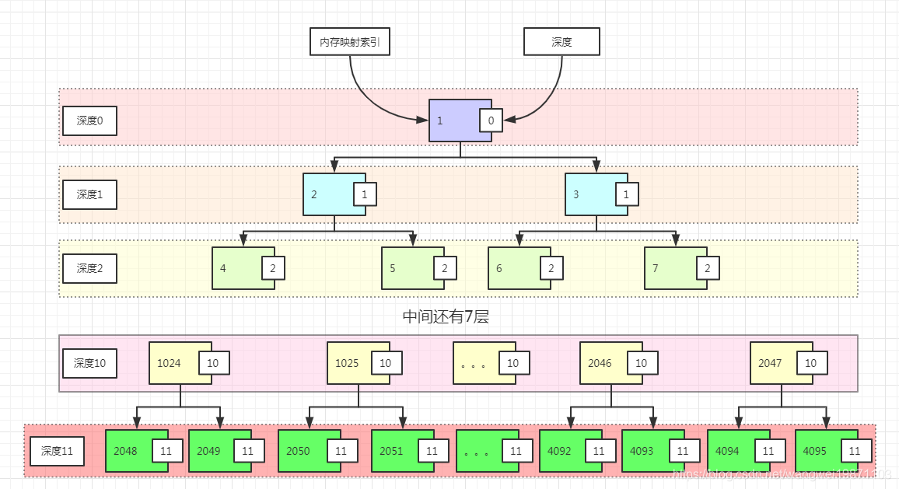
memoryMap和depthMap刚开始就是这样初始化的，可以看到对应数组索引号是从1开始的，就是结点里面的编号，深度索引就是结点右边框里的数字，一棵深度为12的满二叉树刚好是4095个节点，从0开始，最大深度索引为11。
创建化子页数组，叶子节点的数组2048个，每个容量是8k。
31private PoolSubpage<T>[] newSubpageArray(int size) {2 return new PoolSubpage[size];3} 分配空间，这里会判申请的规范容量是否大于等于一页的容量，如果是就用allocateRun分配，不是就用allocateSubpage，然会返回一个handle 句柄，这个东西是一个64位的标记，记载着很多内存地址信息，如果是allocateRun返回的就是内存映射索引，如果是allocateSubpage返回的就是一个包含内存映射索引和子页信息的值。获取后先从缓存里获取，如果没有就进行initBuf初始化。
241boolean allocate(PooledByteBuf<T> buf, int reqCapacity, int normCapacity) {2 //一个唯一的值，根据叶子节点id，位图索引生成3 final long handle;4 // >= pageSize 大于页大小5 if ((normCapacity & subpageOverflowMask) != 0) { 6 // ---往下看---7 //run来分配8 handle = allocateRun(normCapacity);9 // ---end---10 } else {11 //子页来分 <pageSize12 handle = allocateSubpage(normCapacity);13 }14
15 if (handle < 0) {16 return false;17 }18 //从缓存的NIO缓冲区队列里取19 ByteBuffer nioBuffer = cachedNioBuffers != null ? cachedNioBuffers.pollLast() : null;20 // ---看2.2.3步---21 initBuf(buf, nioBuffer, handle, reqCapacity);22 // ---end---23 return true;24} 大于页大小的分配，即Normal类型，此时的normCapacity都是2的倍数了。
201private long allocateRun(int normCapacity) {2 //这里的容量都是pageSize及以上的，log2(normCapacity) - pageShifts 表示容量是页大小的2的多少倍，3 // 最大深度索引再减去这个，刚好是定位到页大小倍数的深度索引4 int d = maxOrder - (log2(normCapacity) - pageShifts);5 // ---往下看1---6 int id = allocateNode(d);7 if (id < 0) {8 return id;9 }10 //减去分配的大小 ---往下看2---11 freeBytes -= runLength(id);12 return id;13}14
15// log2高效的取出2的次数16private static int log2(int val) {17 // compute the (0-based, with lsb = 0) position of highest set bit i.e, log218 // 用这种位运算代替直接取log，提高性能19 return INTEGER_SIZE_MINUS_ONE - Integer.numberOfLeadingZeros(val);20}首先是用
Integer.numberOfLeadingZeros(val)这个是通过位运算取出补码表示的最高非0位的前面还有多少个0，比如16=00010000最高非0位前面还有3个0，如果是8位二进制的话，就是3，如果是32位的话，还得加上前面24个0，也就是27个0，然后INTEGER_SIZE_MINUS_ONE =32-1=31，最后值就为4，也就是16是2的4次方，没问题。这个直接用位运算效率会高点。
int d = maxOrder - (log2(normCapacity) - pageShifts);深度d是怎么计算的？首先我们看下(log2(normCapacity) - pageShifts)，因为在这里的normCapacity至少是8k，所以取了log2后至少是13，如果刚好是13，那么这个结果就是0，d=maxOrder=11。意思就是说定位要了深度索引11，也就是最大深度索引，上面是2048个子页，大小也是8k。如果是16k呢，那结果就是11-(14-13)=10,深度索引是10。也就是内存映射为1024的地方开始。这个方法确实效率很高，不用从头遍历来确定深度索引，直接用位运算来确定从哪个深度索引。
allocateNode：这个就是取出内存映射索引的关键，也是核心的分配算法。
651private int allocateNode(int d) {2//从内存映射索引为1的开始 也就是深度索引为0开始3int id = 1;4// 用于比较id所在深度索引是否小于d5int initial = - (1 << d);6//获取内存映射的深度值7byte val = value(id);8// unusable 大于此深度索引就不可用了9if (val > d) {10return -1;11}12//从头开始深度优先，遍历完所有深度索引小于d的可用的子结点，只有到id的深度索引是d的时候才会结束，14// 而且是遍历一次都是深度索引+1，即是深度优先的算法，先找出对应的深度，然后从左到右看是否有内存可分配。15while (val < d || (id & initial) == 0) {16//得到下一深度索引的左节点17id <<= 1;18//获取对应深度索引值19val = value(id);20//如果大于深度索引 即左节点不能用了21if (val > d) {22//异或位运算，获取右结点23id ^= 1;24//再取出对应深度索引值25val = value(id);26}27}28byte value = value(id);29//获取深度索引值，这里的value>=d 下面还要断言，如果是=d才是可以用的，>d即被设置了unusable，表示不可用了30assert value == d && (id & initial) == 1 << d : String.format("val = %d, id & initial = %d, d = %d",31value, id & initial, d);//断言id保存的深度索引值为d 且id所在深度索引为d，否则就会输出错误信息32// mark as unusable 设置id深度索引值，为最大深度索引+1，即不可用了34setValue(id, unusable);35//更新父节点值37updateParentsAlloc(id);38//返回内存映射索引39return id;40}41//setValue 如果找到了可以分配内存的，则把内存映射的深度值改了，改成了不可用unusable，表示已经分配。43private void setValue(int id, byte val) {44memoryMap[id] = val;45}46// updateParentsAlloc 同时要更新父节点，一直到根节点，改变是否可用的状态，如果仅仅一个子节点分配了，48// 那就父节点的深度值就改成子节点里最小的那个，子节点深度比父节点大1，所以其实也就是深度值+1，如果两个都被用了，那就改成unusable。49private void updateParentsAlloc(int id) {50//从id开始直到跟节点51while (id > 1) {52//获取父节点53int parentId = id >>> 1;54//获id节点的深度索引值55byte val1 = value(id);56//获取另一个节点的深度索引值，即是左节点就获取右节点，是右节点就获取左节点57byte val2 = value(id ^ 1);58//取最小的59byte val = val1 < val2 ? val1 : val2;60//设置父节点的深度索引值为子节点最小的那一个61setValue(parentId, val);62//继续遍历父节点63id = parentId;64}65}整个分配的过程画个图，比如简单申请
8192，d算出来刚好是11，于是从内存映射索引1开始找，最后找到d=11的2048( 深度2的那层序号写错了，应该从4开始的 )：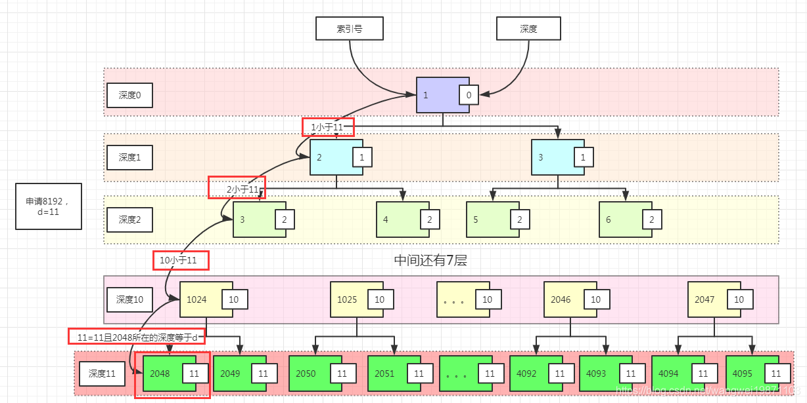
然后把他的深度设置成
12，并且更新父节点：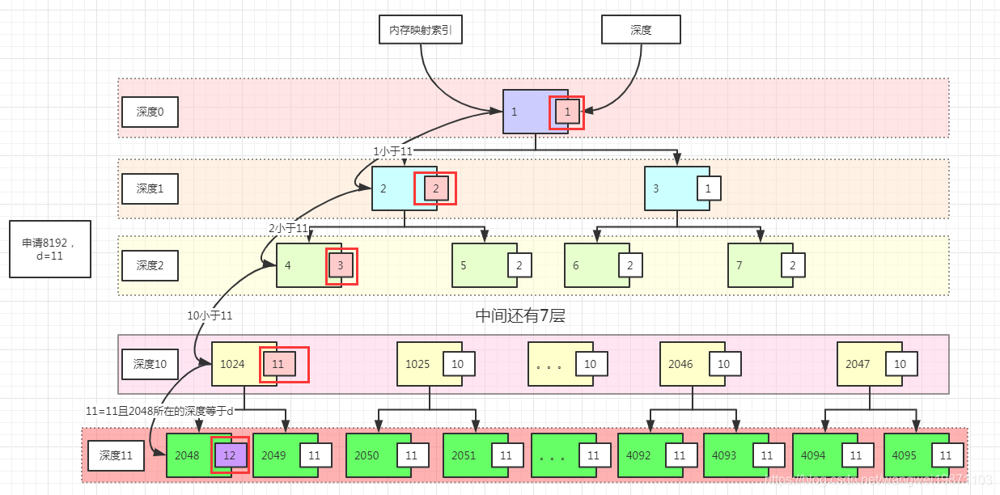
有两个子节点可用，深度值不变，如果只有一个可用，深度值变成另一个的，或者说是深度值+1，如果两个都不可用，深度就是最大深度
+1。
runLength：计算内存映射索引所在深度能分配的内存大小 即内存映射索引为
id节点的可分配内存的尺寸 叶子节点默认是一个页的大小8192，父类尺寸就x2，直到根节点，即是一个块ChunkSize的大小16m ，比如深度值是0，就是根节点，直接就16m，如果深度值是11，就是1<<24-11=8k刚好是页大小。说白了，就是你这个id的节点可以分配多少内存。比如2048-4095对应8k，1024-2047对应16k，512-1023对应32k等。101//初始化的内存映射的深度值2private byte depth(int id) {3return depthMap[id];4}5private int runLength(int id) {7// log2ChunkSize =248//深度值越小，说明能分配的越多，越大能分配的越少9return 1 << log2ChunkSize - depth(id);10}
小于页大小的分配方式。
481private long allocateSubpage(int normCapacity) {2 3 // ---往下看1---4 //获取子页数组的头结点，可以是ting数组也可以是small数组的5 PoolSubpage<T> head = arena.findSubpagePoolHead(normCapacity);6 // ---end--- 7 8 // 119 int d = maxOrder; 10 //修改数据要同步11 synchronized (head) {12 //找到能分配的内存映射索引13 int id = allocateNode(d);14 if (id < 0) {15 //没找到16 return id;17 }18
19 //满二叉树的叶子节点数组20 final PoolSubpage<T>[] subpages = this.subpages;21 //8k22 final int pageSize = this.pageSize;23 //减少一页大小的可用字节24 freeBytes -= pageSize;25 // ---往下看2---26 //获取子页数组索引，其实跟取模一样 0-204727 int subpageIdx = subpageIdx(id);28 // ---end---29
30 //获取子页，第一次是空的31 PoolSubpage<T> subpage = subpages[subpageIdx];32 //第一次是空33 if (subpage == null) { //---往下看3---34 subpage = new PoolSubpage<T>(head, this, id, runOffset(id), pageSize, normCapacity);35 // ----end---36 // ---往下看4---37 //添加进子页数组38 subpages[subpageIdx] = subpage;39 // ---end---40 } else {41 //重新初始化42 subpage.init(head, normCapacity);43 }44 // ---往下看5---45 return subpage.allocate();46 // ---end---47 }48}
findSubpagePoolHead
241// PoolSubpage<T> head = arena.findSubpagePoolHead(normCapacity);2// 根据传进来的规范后的申请容量，找出PoolArena里的tinySubpagePools和smallSubpagePools数组里3// 的匹配容量的PoolSubpage，其实是PoolSubpage链表的头结点head。4PoolSubpage<T> findSubpagePoolHead(int elemSize) {5int tableIdx;6PoolSubpage<T>[] table;7if (isTiny(elemSize)) { // < 5128//获取索引9tableIdx = elemSize >>> 4;10//获取子页数组11table = tinySubpagePools;12} else {13tableIdx = 0;14elemSize >>>= 10;15//[512-pageSize) 尺寸和索引对应: 512->0 1024->1 2048->2 4096->3 刚是smallSubpagePoolsde的全部索引16while (elemSize != 0) {17elemSize >>>= 1;18tableIdx ++;19}20table = smallSubpagePools;21}22return table[tableIdx];24}
subpageIdx：获取页索引 位运算 其实跟取模结果一样，
memoryMapIdx对maxSubpageAllocs(2048)求余数，因为memoryMapIdx在这里的范围是[2048-4095]，刚好对应余数是[0-2047]。31private int subpageIdx(int memoryMapIdx) {2return memoryMapIdx ^ maxSubpageAllocs; // remove highest set bit, to get offset3}
runOffset：获得
id节点对应的内存在块chunk中的偏移量，或者说起始地址。depth和runLength在上一篇中已经讲过，这里主要是先计算偏移位数shift，然后计算节点可分配内存大小runLength，偏移量就是偏移大小x节点大小。int shift = id ^ 1 << depth(id);这里先算1 << depth(id)，找出某一深度的第一个内存映射索引，然后和id做异或，即是求出id对于这个索引的偏移位数。比如id=1025，1 << depth(id)=1024,1024^1025=1。即shift =1，同理id=1024,shift =0,id=1026,shift =2，以此类推。91//计算内存偏移 即内存映射索引id对应的节点在块chunk中的偏移量 范围是[0 - chunkSize)，2// 比如2048是0 x 8k=0 2049是1 x 8k=8k 1024是0 x 16k=0 1025是1 x 16k=16k3private int runOffset(int id) {4// 其实每一个节点的偏移位置就是他的左节点的偏移，叶子节点就是自身的偏移量5//节点的偏移位数 比如2048是0 2049是1 2050是2 ..4095是2047 也就是某个深度中从左到右的编号，从0开始。6int shift = id ^ 1 << depth(id);7//偏移量=偏移位数x可分配内存大小8return shift * runLength(id);9}
subpages[subpageIdx] = subpage;：添加到chunk子页数组里。
subpages[subpageIdx] = subpage子页创建后就被添加到了子页数组里，这里还有另外一个结构关系，就是PoolArena里的tinySubpagePools和smallSubpagePools与PoolChunk的subpages的关系，因为head是tinySubpagePools和smallSubpagePools元素，后续添加的PoolSubpage都会添加进head形成的双向循环链表中。用图来表示的话应该是这样，注意 这里的双向连线是双向循环链表，避免太乱所以这样表示 ：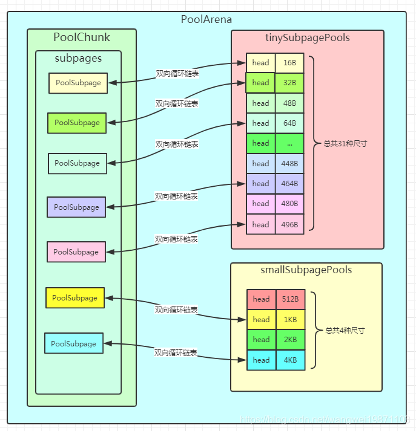
subpage.allocate()：里面才是对子页可分配的内存做了记录并分配了位图的一位，并返回一个
64位的句柄handle。361long allocate() {2if (elemSize == 0) {3//一般不会申请0内存，为什么这里还要处理，暂时没弄明白4return toHandle(0);5}6//没有可用的容量或者要销毁8if (numAvail == 0 || !doNotDestroy) {9return -1;10}11// ---往下看---13//获取下一个可用的位图索引，不是位图数组14final int bitmapIdx = getNextAvail();15// ---end---16//获取所在的位图在数组中的索引18int q = bitmapIdx >>> 6;19//获取64余数,0-63 位图中的索引信息 也就是第几位要设置为120int r = bitmapIdx & 63;21//根据位图索引获取这个位图中的位置是0表示可用22assert (bitmap[q] >>> r & 1) == 0;23//将可用的位图索引设置为1，即不可用24bitmap[q] |= 1L << r;25//如果没有可用了，就从链表中删除27if (-- numAvail == 0) {28// ---往下看---29removeFromPool();30// ---end---31}32// ---往下看---34return toHandle(bitmapIdx);35// ---end---36}
getNextAvail：这个就是获取下一个位图的索引
bitmapIdx，这里的索引是32位是由两部分组成的：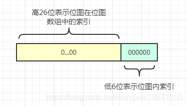
this.nextAvail最开始是0，会直接返回0，并且把this.nextAvail设置为-1，这样第二次就要进行findNextAvail了，这样确实第一次就不需要运算了，用一个判断来提升性能。691private int getNextAvail() {2int nextAvail = this.nextAvail;3if (nextAvail >= 0) {4this.nextAvail = -1;5return nextAvail;//第一次直接返回，后面就要findNextAvail6}7return findNextAvail();//-1表示要找8}9->findNextAvail：bitmapLength就是实际上用到的位图数，所以不需要整个位图数据来遍历，11只需要遍历bitmapLength个位图。把每个位图取出来按位取反，如果不为0，说明没取反前还有位置有0存在，12这个位图还能用，否则就说明所有位都是1了，取反就等于0，不可用了，如果还能用，就要看用哪一位findNextAvail0，13默认是从低位开始的。如果都不能用就返回-1。14private int findNextAvail() {15final long[] bitmap = this.bitmap;16final int bitmapLength = this.bitmapLength;17for (int i = 0; i < bitmapLength; i ++) {18long bits = bitmap[i];19if (~bits != 0) {//还有能用的20return findNextAvail0(i, bits);21}22}23return -1;24}25->findNextAvail0：这里是真正使用位图的时候，先看传入参数，传入的i其实就是位图所在位图数组的索引，27bits就是位图本身。首先会有i << 6，这个就是先求出bitmapIdx的26位高位的值baseVal ，就是位图索引对应的值，28然后遍历位图，j表示的就是位图里的第j位，也就是bitmapIdx的低6位，而且是从低位开始判断，取值是0-63。29然后(bits & 1)取出最低位，如果是0，表示可用分配，然后就将baseVal | j，表示高26位和低6位合并了，30这样才算是完整的bitmapIdx。而且这样计算出来的bitmapIdx刚好也是已经分配的内存数-1，31所以最后还要和最大可分配数比较，小于才能分配，因为等于就已经超出最大可分配数maxNumElems ，32因为bitmapIdx是从0开始的，最大应该是maxNumElems -1。如果低位不可分配就将位图右移一位，33也就是取出第二位继续判断。34private int findNextAvail0(int i, long bits) {35//最大可分配数36final int maxNumElems = this.maxNumElems;37//要分配的起始索引，根据第i个位图，如果是0表示0-63进行分配 1表示64-127分配38final int baseVal = i << 6;39//遍历位图的每一位，从最低位开始遍历，0表示没有过40for (int j = 0; j < 64; j ++) {//j表示位图里第j位，从低位到高位0-6341//取出最低位，为0表示可用42if ((bits & 1) == 0) {43//加上位置序号j后的新的索引值，比如开始是0，第一个+0索引就是0，然后+1，索引1，类似最后索引是baseVal+6344int val = baseVal | j;45//如果索引没到最大可分配数就返回，其实最大索引就是maxNumElems-146if (val < maxNumElems) {47return val;48} else {49//等于就不行了，跳出循环50break;51}52}53//位图右移，即从低位往高位54bits >>>= 1;55}56return -1;57}58举个例子，比如我申请的内存是32B，那么总共需要的位图应该是8k/32/64=4个，最大可分配数maxNumElems=8k/32=256，61这里的这4个位图，每一个刚好对应一个内存分配，总共256个。现在32B的内存来了，首先拿出第0个位图，也就是i=0，62发现可用，于是就开始0<<<6=0,高26位全是0了，再看位图的64位情况，发现底0位就可以用，与是就返回了，63这个bitmapIdx就是0。同样的，假设第0个位图用满了，如果我又来了一个32B，那就需要用第1个位图，最后返回64的bitmapIdx就是1000000。65首先是bitmapIdx >>> 6，得到高26位，获取位图在位图数组的索引。67然后bitmapIdx & 63，得到低6位,，获取位图内部索引。68最后进行设置bitmap[q] |= 1L << r，将这个位图内部索引所对应的值设置为1，表示不可用了。69上面举的例子，画了一个bitmapIdx的变化图：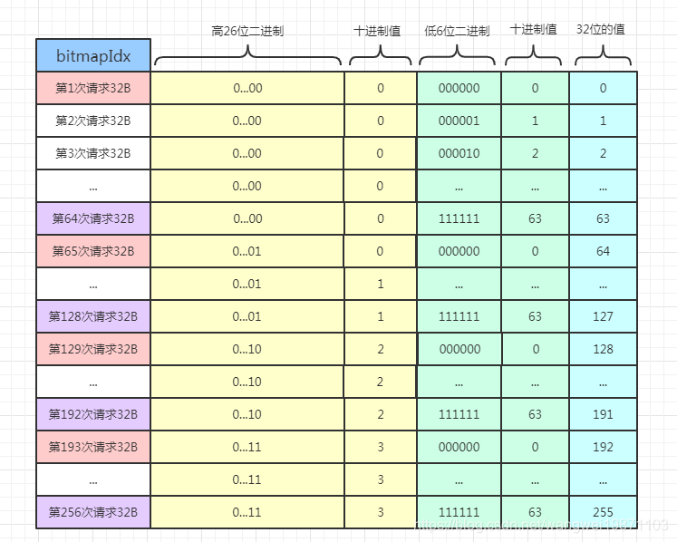
removeFromPool：如果发现可用的内存数量
numAvail是0了，就会将这个页从双向循环链表中删除。71private void removeFromPool() {2assert prev != null && next != null;3prev.next = next;4next.prev = prev;5next = null;6prev = null;7}
toHandle：
31private long toHandle(int bitmapIdx) {//2return 0x4000000000000000L | (long) bitmapIdx << 32 | memoryMapIdx;3}这个也是关键点，首先他会把
bitmapIdx结合内存映射索引memoryMapIdx一起转化为64位数。
(long) bitmapIdx << 32 | memoryMapIdx低32位是内存映射索引memoryMapIdx，高32中的低6位是所在位图的内部索引，占据64位的位图中的0-63位的某一位，其余26位就是位图所在位图数组的索引。而最后加上
0x4000000000000000L，因为不想让高32位是0，如果是第一次分配，bitmapIdx是0，memoryMapIdx=2048，高32位就是0，返回就是2048，这样不会被当做子页分配来处理。我们看下面的方法：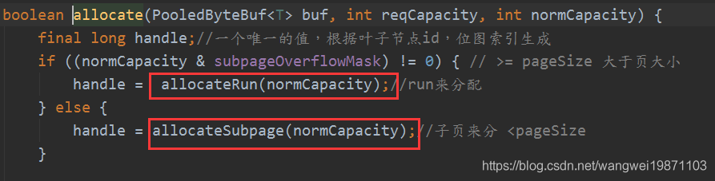
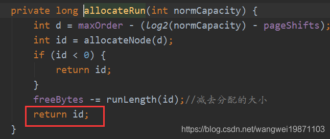
可以看到
allocateRun是分配8k以及以上的内存，可以直接返回内存映射索引的，也可以是2048，而allocateSubpage通过toHandle方法，如果没有加上0x4000000000000000L，第一次分配bitmapIdx=0，返回的也是2048。这样在后面的initBuf方法就会出问题：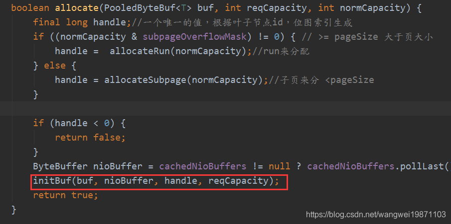
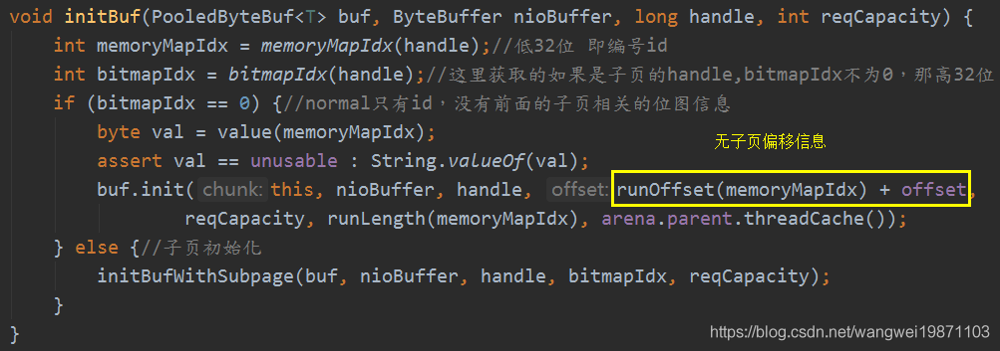
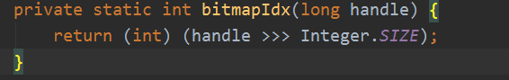
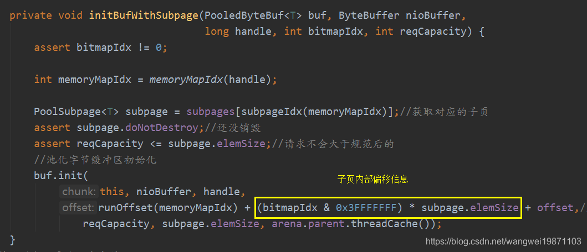
上面的方法中，对于
2048来说，取出的bitmapIdx都是0，因此子页分配的就不会调用initBufWithSubpage，会发现内部的chunk偏移是不对的，少了子页的内部偏移，就会出问题。所以为了识别子页的
bitmapIdx，最高非符号位设置了1。这里可能还有问题，如果bitmapIdx高26位里面，刚好跟他或起来进位了，又变成0了，这个不用担心，第一bitmapIdx高26位前面说了，是位图数组的索引，初始化的时候对于最小尺寸16B已经创建好了，数组长度就是8，而且最高位符号位也不可能是1呀，是正数呀，不会进位变成0。
其实就是根据bitmapIdx来区分是子页的还是Normal的初始化。
311void initBuf(PooledByteBuf<T> buf, ByteBuffer nioBuffer, long handle, int reqCapacity) {2 //低32位 即内存映射索引3 int memoryMapIdx = memoryMapIdx(handle);4 //这里获取的如果是子页的handle,bitmapIdx不为0，那高32位，并不是真正的位图索引，最高非符号位多了1，如果是normal的，那就是05 int bitmapIdx = bitmapIdx(handle);6 //normal只有id，没有前面的子页相关的位图信息7 if (bitmapIdx == 0) {8 byte val = value(memoryMapIdx);9 assert val == unusable : String.valueOf(val);10 buf.init(this, nioBuffer, handle, runOffset(memoryMapIdx) + offset,11 reqCapacity, runLength(memoryMapIdx), arena.parent.threadCache());12 } else {13 // ---往下看1---14 //子页初始化15 initBufWithSubpage(buf, nioBuffer, handle, bitmapIdx, reqCapacity);16 // ---end---17 }18}19
20//获取低32位的handle，即id21private static int memoryMapIdx(long handle) {22 return (int) handle;23}24//直接获取handle高32位，子页的并非原始的bitmapIdx25private static int bitmapIdx(long handle) {26 return (int) (handle >>> Integer.SIZE);27}28//获取对应编号的深度索引29private byte value(int id) {30 return memoryMap[id];31}
initBufWithSubpage：这里直接拿子页的讲，因为不是子页的也是调用了相同的
buf.init方法，只是参数不一样。241private void initBufWithSubpage(PooledByteBuf<T> buf, ByteBuffer nioBuffer,2long handle, int bitmapIdx, int reqCapacity) {3assert bitmapIdx != 0;4//获取内存映射索引6int memoryMapIdx = memoryMapIdx(handle);7//获取对应的子页9PoolSubpage<T> subpage = subpages[subpageIdx(memoryMapIdx)];10//还没销毁11assert subpage.doNotDestroy;12//请求容量不会大于规范后的13assert reqCapacity <= subpage.elemSize;14// ---往下看---16//池化字节缓冲区初始化17buf.init(18// ---end---19this, nioBuffer, handle,21//块的偏移地址+页的偏移地址+缓存行的偏移地址(默认0)22runOffset(memoryMapIdx) + (bitmapIdx & 0x3FFFFFFF) * subpage.elemSize + offset,23reqCapacity, subpage.elemSize, arena.parent.threadCache());24}我们可以看到，子页会取出
subpage，因为下面会需要计算chunk块的偏移，也就是分配的内存在chunk块内部数组的其实地址。
runOffset(memoryMapIdx) + (bitmapIdx & 0x3FFFFFFF) * subpage.elemSize + offset我们来分析下这个地址什么意思。
runOffset(memoryMapIdx)这个前面分析过，其实就是对应的页偏移地址，一页是8k嘛，也就是8k的整数倍。
(bitmapIdx & 0x3FFFFFFF) * subpage.elemSize这个里面的(bitmapIdx & 0x3FFFFFFF)就是对求handle时候用到的0x4000000000000000L解码啦，解码出子页真正的bitmapIdx，也就是子页内存的偏移位置，然后在乘以每块内存的大小subpage.elemSize，就是在子页中的偏移位置。
offset这个是缓存行的偏移，一般用不到，一个缓存行里放多个数据可能就要用到啦，不过这样可能会引起多线程竞争了，不过netty的这个内存分配方案，就是为了最大程度避免多线程的竞争，这个暂时就不多说了。所以他们加起来就是在
chunk块中的偏移，也就可以对应到chunk块中的memory上去了，最终都是字节数组。假设子页已经分配了
64B的内存，即块上的字节数组用了64B，然后又申请了16B，最后的块偏移地址就是64，其实意思就是说从数组索引64开始，长度为16的分配给我用了。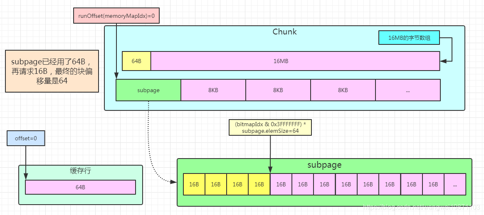
如果对应的不是子页的话，就会少算一个子页内存的偏移，当然此时的分配大小就是
runLength(memoryMapIdx)，即某个节点的大小。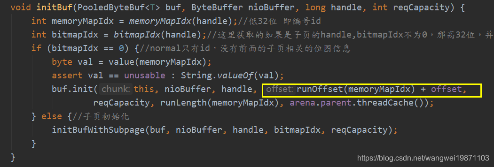
buf.init：这里的buf指的是PooledByteBuf，最终会调用到
init0：151private void init0(PoolChunk<T> chunk, ByteBuffer nioBuffer,2long handle, int offset, int length, int maxLength, PoolThreadCache cache) {3assert handle >= 0;4assert chunk != null;5this.chunk = chunk;//哪个块7memory = chunk.memory;//字节数组，或者内存地址8tmpNioBuf = nioBuffer;//缓存的buffer9allocator = chunk.arena.parent;//分配器10this.cache = cache;//线程缓存11this.handle = handle;//句柄12this.offset = offset;//缓存行偏移13this.length = length;//申请的内存大小14this.maxLength = maxLength;//规范化后的内存大小15}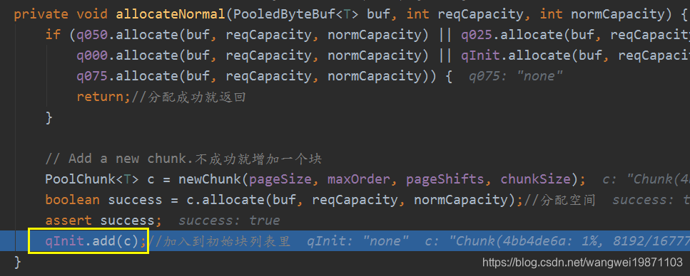
不会实际分配内存，只是做了分配内存的记录，记录一个页中哪些分配完了，哪些可以分配 ，实际的内存分配是在PoolChunk的memory属性中，如果是申请堆内存，memory就是数组，否则如果申请直接内存，memory就是直接缓冲区。PoolSubpage在页空间分配满之后就会被删除释放。
81PoolSubpage(PoolSubpage<T> head, PoolChunk<T> chunk, int memoryMapIdx, int runOffset, int pageSize, int elemSize) {2 this.chunk = chunk;//所在块3 this.memoryMapIdx = memoryMapIdx;//内存映射索引4 this.runOffset = runOffset;//块内偏移5 this.pageSize = pageSize;//页大小6 bitmap = new long[pageSize >>> 10]; //最多需要多少个long类型的位图来描述一页分割成16B的所有内存的状态7 init(head, elemSize);8} bitmap = new long[pageSize >>> 10]; 这里解释下：这里的10，其实是4+6,4是表示16是2的4次方，6表示64是2的6次方，所以加起来是10，即用页大小8k除以16除以64，这里的意思就是以最小的尺寸16B来计算，一页能分几个16B大小的内存，然后用位图表示这个内存是否被用需要1位，如果用long类型的位图就是64位，所以除以64，就知道需要多少个64位的位图来表示这些16B的内存的状态。默认页大小8k，算出来需要8个这样的位图，所以位图数组长度是8。
老规矩，先看一些主要的属性，后面就用到了。
191final PoolChunk<T> chunk;2//内存映射索引3private final int memoryMapIdx;4//chunk中的偏移5private final int runOffset;6//页大小7private final int pageSize;8//64位的位图数组，描述某一尺寸内存的状态 每一位都可以表示是该内存否可用了 1表示不可用 0表示可用9private final long[] bitmap;10
11PoolSubpage<T> prev;//前驱12PoolSubpage<T> next;//后继13
14boolean doNotDestroy;//是否销毁15int elemSize;//分割的内存尺寸大小16private int maxNumElems;//一页存能存多少个尺寸都为elemSize的内存，即即最大可分配的内存数17private int bitmapLength;//实际用到的位图数18private int nextAvail;//下一个可用的位图索引19private int numAvail;//可用内存的个数进行一些属性的初始化，并将自身添加到头节点的后面。
171void init(PoolSubpage<T> head, int elemSize) {2 doNotDestroy = true;3 this.elemSize = elemSize;4 if (elemSize != 0) {5 maxNumElems = numAvail = pageSize / elemSize;//获取能分割成多少elemSize大小的内存6 nextAvail = 0;7 bitmapLength = maxNumElems >>> 6;//实际需要用的到的long类型的位图的个数，每个位图有64位，取整8 if ((maxNumElems & 63) != 0) {//有余数就多一个9 bitmapLength ++;10 }11 //实际用到的位图数12 for (int i = 0; i < bitmapLength; i ++) {13 bitmap[i] = 0;//初始化位图14 }15 }16 addToPool(head);17}
addToPool：将当前子页加到
head的后面，是个 双向循环链表 。71private void addToPool(PoolSubpage<T> head) {2assert prev == null && next == null;3prev = head;4next = head.next;5next.prev = this;6head.next = this;7}一开始就只有
head是这样的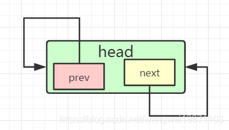
加一个之后：
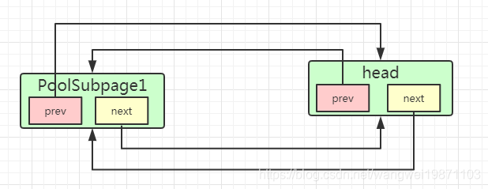
后续如果有相同尺寸的请求，都会在这个子页里分配，直到子页满了后，会链表中删除。可见
pred和next都可以循环起来。
351//大小类型 还有超过chunkSize的，huge2 enum SizeClass {3 Tiny,//[16-512)4 Small,//[512 - pageSize)5 Normal//[pageSize - chunkSize]6 }7//TinySubpage个数32 tiny是512以下的，512除以16 为32， 第1个是个头结点 后面31个才是有用的8 static final int numTinySubpagePools = 512 >>> 4;9
10 private final int maxOrder;//二叉树的最大深度 默认1111 final int pageSize;//页大小 默认8K12 final int pageShifts;//1左移多少位得到pageSize，页大小是8k = 1 << 13 所以默认13位13 final int chunkSize;//块大小 默认16m14 final int subpageOverflowMask;//用来判断是否小于一个页大小 即小于8k15 final int numSmallSubpagePools;//small类型的子页数组的个数16 final int directMemoryCacheAlignment;//对齐的缓存尺寸比如32 6417 final int directMemoryCacheAlignmentMask;//对齐遮罩，求余数用，2的幂次可以用18 private final PoolSubpage<T>[] tinySubpagePools;//tiny类型子页数组 默认32个19 private final PoolSubpage<T>[] smallSubpagePools;//small类型子页数组 默认4个20//根据块内存使用率状态分的数组，因为百分比是正数，所以就直接取整了21 private final PoolChunkList<T> q050;//50-10022 private final PoolChunkList<T> q025;//25-7523 private final PoolChunkList<T> q000;//1-5024 private final PoolChunkList<T> qInit;//0-2525 private final PoolChunkList<T> q075;//75-10026 private final PoolChunkList<T> q100;//100-10027//块列表的一些指标度量28 private final List<PoolChunkListMetric> chunkListMetrics;29
30
31 // We need to use the LongCounter here as this is not guarded via synchronized block.//通过原子操作记录大小32 private final LongCounter allocationsTiny = PlatformDependent.newLongCounter();//Tiny的分配个数33 private final LongCounter allocationsSmall = PlatformDependent.newLongCounter();//Small的分配个数34 private final LongCounter allocationsHuge = PlatformDependent.newLongCounter();//huge的分配个数35 private final LongCounter activeBytesHuge = PlatformDependent.newLongCounter();//huge的字节大小611protected PoolArena(PooledByteBufAllocator parent, int pageSize,2 int maxOrder, int pageShifts, int chunkSize, int cacheAlignment) {3 4 this.parent = parent;5 this.pageSize = pageSize;6 this.maxOrder = maxOrder;7 this.pageShifts = pageShifts;8 this.chunkSize = chunkSize;9 10 11 // 位移运算 ---看2.1步---12 directMemoryCacheAlignment = cacheAlignment;13 directMemoryCacheAlignmentMask = cacheAlignment - 1;14 // ---end---15 16 // 位移运算 ---看2.2步---17 subpageOverflowMask = ~(pageSize - 1);//-819218 // ---end---19 20 //---看2.3步---21 tinySubpagePools = newSubpagePoolArray(numTinySubpagePools);//创建tiny子页数组22 // ---end---23 24 for (int i = 0; i < tinySubpagePools.length; i ++) {25 // ---看2-4步---26 tinySubpagePools[i] = newSubpagePoolHead(pageSize);//创建每个tiny子页链表的头结点27 // ---end---28 }29 //剩余Small子页的个数 也就是[512-pageSize)范围内的尺寸类型的个数 pageSize=8192= 1<<<13 。512= 1<<<9 中间的尺寸类型个数是13-9=430 numSmallSubpagePools = pageShifts - 9;//13-9=4 4种尺寸其实就是512 1k 2k 4k31 smallSubpagePools = newSubpagePoolArray(numSmallSubpagePools);32 for (int i = 0; i < smallSubpagePools.length; i ++) {33 smallSubpagePools[i] = newSubpagePoolHead(pageSize);//创建每个small子页链表的头结点34 }35 36 // ---看2-5步---37 //双向链表38 q100 = new PoolChunkList<T>(this, null, 100, Integer.MAX_VALUE, chunkSize);39 q075 = new PoolChunkList<T>(this, q100, 75, 100, chunkSize);40 q050 = new PoolChunkList<T>(this, q075, 50, 100, chunkSize);41 q025 = new PoolChunkList<T>(this, q050, 25, 75, chunkSize);42 q000 = new PoolChunkList<T>(this, q025, 1, 50, chunkSize);43 qInit = new PoolChunkList<T>(this, q000, Integer.MIN_VALUE, 25, chunkSize);44
45 q100.prevList(q075);46 q075.prevList(q050);47 q050.prevList(q025);48 q025.prevList(q000);49 q000.prevList(null);//没有前一个列表，可以直接删除块50 qInit.prevList(qInit);51 // ---end---52 53 List<PoolChunkListMetric> metrics = new ArrayList<PoolChunkListMetric>(6);//使用率指标54 metrics.add(qInit);55 metrics.add(q000);56 metrics.add(q025);57 metrics.add(q050);58 metrics.add(q075);59 metrics.add(q100);60 chunkListMetrics = Collections.unmodifiableList(metrics);61}下面量行看起来好像不知道干嘛的，其实是用来做位运算的，这里涉及的都是2的幂次，所以可以用这种方式来求。
21directMemoryCacheAlignment = cacheAlignment;2directMemoryCacheAlignmentMask = cacheAlignment - 1; 首先directMemoryCacheAlignment 这个就是缓存对齐的大小，比如64字节，也就是说要对齐到64，超过就要去下一个64，而directMemoryCacheAlignmentMask是用来获取对directMemoryCacheAlignment取余的余数，所以应该是63，二进制就是111111，跟任何数做&操作，都可以获取对64的取余的余数，其实对应的就是这个方法：
61int alignCapacity(int reqCapacity) {2 //取出余数3 int delta = reqCapacity & directMemoryCacheAlignmentMask;4 //加上对齐标准，减去余数，就可以对齐了5 return delta == 0 ? reqCapacity : reqCapacity + directMemoryCacheAlignment - delta;6} 举个例子，directMemoryCacheAlignment=64，directMemoryCacheAlignmentMask=63，reqCapacity =100，那么delta =100-64=36。当然如果用位与的话应该这样，我把一些高位0删除了，只为了对齐做位与：
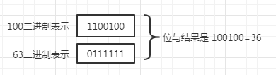
如果余数是0，那reqCapacity就是已经对齐了，直接返回，否则的话就要减去余数，加上对齐大小，也就是这样，余数0：
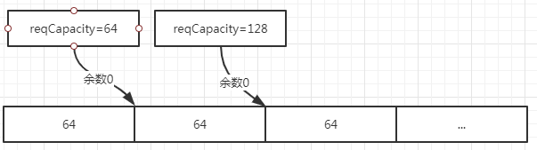
余数36，对齐后为128：
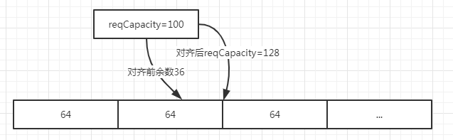
11subpageOverflowMask = ~(pageSize - 1); 这个又是干嘛用的，又是一个位运算，好奇怪，其实这个跟上面那个的directMemoryCacheAlignmentMask差不多，是个遮罩掩码，可以取出数的高位。
比如pageSize=8k，二进制就是10000000000000。pageSize - 1的二进制就是01111111111111，再取反10000000000000就会发现低13位全是0，高位全是1，刚好可以用来提取高位。任何一个高位是1，值就是大于等于8k(申请内存不可能是负数，前面会有检查，最高位不会是1)，其实主要是判断是否小于8k，即一页大小，然后来用Tiny或者Small尺寸来处理，比如下面这个方法：
31boolean isTinyOrSmall(int normCapacity) {2 return (normCapacity & subpageOverflowMask) == 0;3} 只要位与为0，就表示高位全是0，那就是小于8k，否则大于等于8k，用来判断分配容量是否是Tiny或者Small。
创建PoolSubpage数组，其实PoolSubpage是一个双向链表：
31private PoolSubpage<T>[] newSubpagePoolArray(int size) {2 return new PoolSubpage[size];3}创建了一个只记录页大小的子页的头结点，头结点的前驱和后继都指向自己：
61private PoolSubpage<T> newSubpagePoolHead(int pageSize) {2 PoolSubpage<T> head = new PoolSubpage<T>(pageSize);3 head.prev = head;4 head.next = head;5 return head;6} 内部会按照chunk的使用率分成6组，每个组都是PoolChunkList类型的数组，里面还维护着chunk链表，每个链表有最大能申请的容量，有内存使用率的范围，然后PoolChunkList也以链表的形式连接，只要chunk的内存使用率发生变化，就会判断是否超出范围，超出会进行移动，具体后续会讲：
61 q050;//50-1002 q025;//25-753 q000;//1-504 qInit;//0-255 q075;//75-1006 q100;//100-100示意图：
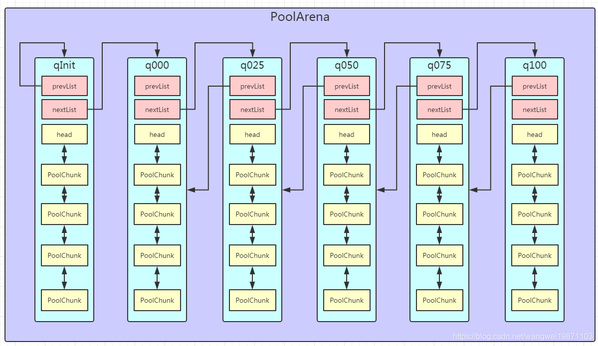